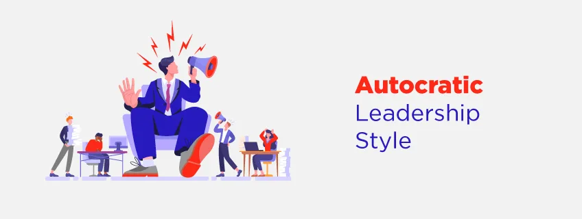
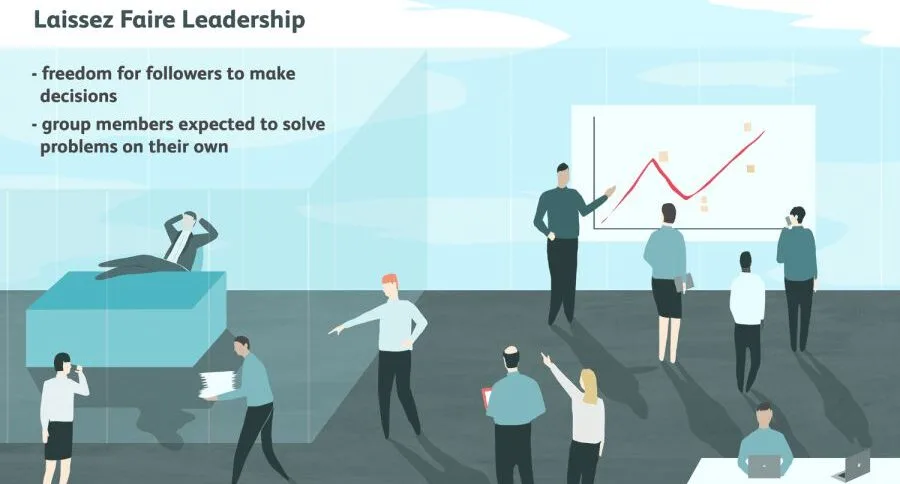
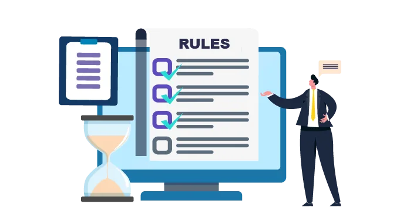
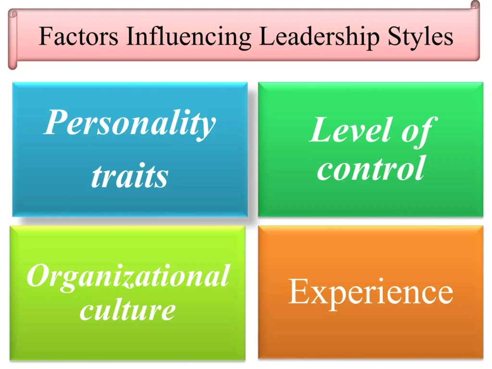
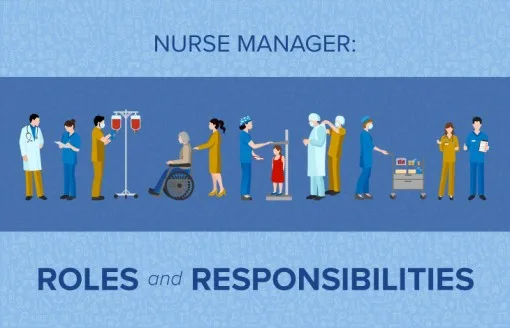

Expanded Nursing Uganda Explanation
Styles of leadership should be understood beyond a short definition. Link the concept to patient history, focused assessment, common risks, nursing priorities, documentation and evaluation of outcomes.
Contents, 25 sections (tap to expand)
01 LEADERSHIP STYLES/TYPES
Leadership is first and foremost about influencing . But most people take the view that leadership style is the manner in which a leader approaches and deals with people in the context of one or more tasks to be addressed. Therefore, we can say by definition that:
A leadership style is a leader’s way of providing direction, implementing plans, and motivating people .
A leadership style is about how decisions are made in an organization or unit . The decisions will be made based on the current circumstances in relation to the desired outcomes . For example: some situations will deserve a leader to make the decision and inform the employees to follow what he has decided. E.g. in case of an emergence. This style where the leader makes the decision is known as Authoritarian-Autocratic leadership style.
In 1939, psychologist Kurt Lewin led a group of researchers to identify different styles of leadership, and established three major leadership styles. These are
- Authoritarian (autocratic) leadership style.
- Participative (democratic) leadership style.
- Delegative (laissez-faire) leadership style.
Max Weber, a German sociologist , also developed another leadership style as part of his broader theory of bureaucracy.
- Bureaucratic leadership style.
02 AUTOCRATIC/AUTHORITARIAN LEADERSHIP STYLE:
Autocratic leadership , also known as authoritarian leadership or dictatorial leadership , is a leadership style characterized by individual control over all decisions and little input from group members. In this style, leaders make choices based on their own ideas and judgments and rarely accept advice from followers. Autocratic leadership involves absolute, authoritarian control over a group.
The autocratic leadership style allows managers to make decisions alone without the input of others or consultation of their team members even if their input would be useful. Managers possess total authority and impose their will on employees. No one challenges the decisions of autocratic leaders. This leadership style is found in large bureaucracies like the police, army, prisons.
03 Characteristics of Autocratic Leaders
- High concern for work over people : Autocratic leaders prioritize achieving goals and completing tasks over the well-being and development of their subordinates. They tend to focus on productivity and efficiency rather than building relationships and supporting the personal growth of their team members.
- Rigid standards and methods : Autocratic leaders establish strict guidelines and procedures for performance and expect their subordinates to adhere to these rules without question. They set specific expectations and closely monitor compliance with their prescribed methods of work.
- Coercion as a motivator : Autocratic leaders rely on the use of authority and coercion to motivate their subordinates. They may use fear, threats, or punishment to ensure compliance and achieve desired outcomes. This approach can create a tense and fear-driven work environment.
- Centralized decision-making: Autocratic leaders make decisions independently, without involving their subordinates in the decision-making process. They have full control and authority over the decision-making process and tend to have limited trust in the abilities and input of their team members.
- Emphasis on status differences: Autocratic leaders maintain a hierarchical structure where they hold a position of authority and power, while their subordinates are expected to follow orders and comply with their directives. This creates a clear distinction between the leader (“I”) and the followers (“You”).
- Top-down information flow : Autocratic leaders control the flow of information within the organization, ensuring that information is disseminated from the top to the bottom. They may limit access to information and communication channels, which can hinder collaboration and innovation.
- Resistance to criticism : Autocratic leaders are often resistant to criticism and may discourage or suppress disagreeing opinions. They expect unquestioning obedience and may view criticism as a challenge to their authority. This can create a culture of silence and hinder open communication.
- Characteristics of autocratic leaders Have higher concern for work than for the people who perform the work. Set rigid standards and methods of performance and expect the subordinates to obey the rules and follow them subordinate/followers are motivated by coercion. Decision making is basically for the manager with no subordinate involvement. Emphasis is on the difference in status that is I and You. Information must always flow from top to bottom. Should never be criticized nor their action. Allows little or no input from group members. Provides leaders with the ability to dictate work methods and processes. Leaves the group feeling like they aren’t trusted with decisions or important tasks. Tends to create highly structured and very rigid environments. Discourages creativity and out-of-the-box thinking. Establishes rules and tends to be clearly outlined and communicated.
04 Personality Traits of an Autocratic Leader
Authoritarian leaders exhibit specific personality traits that influence their style of leadership.
- Firm Personality : Autocratic leaders have a strong and assertive personality, displaying confidence and decisiveness in their actions and decisions.
- Task-Oriented Focus : Autocratic leaders prioritize task completion and achieving goals over the well-being and satisfaction of their team members. They emphasize productivity and efficiency.
- Lack of Consideration for Employee Interests: Autocratic leaders tend to disregard the interests and opinions of their employees, focusing solely on accomplishing the task at hand.
- Rigid Standards and Methods: Autocratic leaders establish strict standards and procedures for performance, expecting subordinates to adhere to these rules without question or deviation.
- Centralized Decision-Making: Autocratic leaders make all decisions independently, without seeking input or involvement from their team members. They then communicate their decisions as orders to be followed.
- Minimal Group Participation : Autocratic leaders limit or completely exclude group participation in decision-making processes. They prefer to maintain control and authority over the decision-making process.
- Limited Influence of Suggestions : While autocratic leaders may listen to the suggestions of their team members, they are not easily influenced by them. They believe their own plans and ideas are superior.
- Lack of Trust and Fear: Autocratic leaders often lack trust and confidence in their subordinates, which can create an environment of fear and apprehension among team members.
05 Advantages of Autocratic Leadership
- Quick Decision Making : Autocratic leaders have the authority to make decisions without consulting others, which allows for faster decision-making, especially in high-stress situations where prompt resolutions are needed.
- Productive Workplace : Autocratic leaders ensure the completion of productive projects by making decisions and promptly conveying them to the team. This increases productivity by providing clear instructions and deadlines, resulting in the regular completion of projects.
- Provide Directions : Autocratic leaders provide clear directions to employees, making it easier for them to follow instructions and achieve objectives. They can assist team members who struggle with deadlines by providing guidance on breaking down projects into smaller tasks.
- Direct Communication : Autocratic leaders facilitate direct and effective communication with their staff by providing all the necessary information. This reduces the need for employees to consult their leaders for task descriptions, leading to efficient communication within the organization.
- Decrease Workplace Stress : Autocratic leaders establish rules, laws, and norms in the workplace, reducing employee stress. By assuming accountability for their work, these leaders lessen the pressure on the staff, allowing them to stay engaged and productive.
- Explain the Structure and Job Details: Autocratic leaders clarify the structure and job details to employees, creating specific work objectives. This eliminates uncertainty and helps team members understand their responsibilities, leading to a more efficient work environment.
- Effective Crisis Management : Autocratic leaders can respond to and manage crises and stressful situations effectively because they make the majority of the decisions in the company. Their confidence in decision-making helps the team feel more secure during challenging times.
- Close Oversight : This eliminates the tendency for workers to relax at work that may occur with more lenient management styles. The result can be increased productivity and speed, as workers who fall behind are quickly identified and corrective measures are taken. Quality may improve, as the employees’ work is monitored constantly. Time wasting and the need to waste resources is also reduced.
- It’s Easier to Set Policy : This is because in an autocratic leadership style, there are no opposing political ideologies to stand in the way of policy making.
Disadvantages of Autocratic Leadership
- Decrease in Employee Morale: Autocratic leadership can lead to low employee morale as team members may feel underappreciated and undervalued. The lack of value placed on their suggestions and the leader taking credit for success can demoralize the workforce.
- Results in Dissatisfaction among Employees : Employees who prefer some degree of authority and involvement in decision-making may feel oppressed in an autocratic leadership style. The lack of openness to innovation and new ideas can lead to dissatisfaction and resentment among employees.
- Absence of Micromanagement : Autocratic leaders tend to micromanage, correcting workers at every stage of the process instead of providing clear instructions and objectives. This creates a sense of fear and pressure among employees, hindering their autonomy and growth.
- Decrease in Creative Ideas : Autocratic leadership limits the input and collaboration of team members, making it challenging for unique and creative ideas to emerge. This can result in predictable job routines and hinder the development of a creative work environment.
- Creates a Dependency System : Autocratic leadership can create a dependency system where employees rely heavily on the leader for decision-making and problem-solving. This hinders personal growth and the development of independent leaders within the organization.
Others;
- One way communication without feedback leads to misunderstanding, and communications breakdown.
- An autocratic leader makes his own decisions which can be very dangerous in this age of technological and sociological complexity.
- It fails to develop the worker’s commitment to the objectives of the organization.
- It creates problems both with employee morale and production in the long-run; due to their resentment.
- It is unsuitable when the workforce is knowledgeable about their jobs and the job calls for teamwork and cooperative spirit.
- Limited Freedoms and Access to Information especially for the employees/subordinates.
- Motivation of employees is compromised since they do not exercise their rights.
- Employees are less creative.
- Does not encourage the individuals growth and does not recognize the potential,
- imitativeness, and create less cooperation among members.
- The leader lacks supportive power that results in decisions made with consultation although he may be correct.
- Inhibits group participation which results in lack of growth, less job satisfaction can lead to less commitment to the goals of organization.
06 DEMOCRATIC LEADERSHIP/PARTICIPATIVE/CONSULTATIVE
Democratic leadership is a leadership style that emphasizes the involvement of team members in decision-making processes and encourages active participation from all members of the group . It is also known as consultative or participatory leadership.
This style involves the leader including one or more employees in the decision making process (determining what to do and how to do it). Democratic leadership attempts to manage with democratic principles, such as self-determination, inclusiveness, equal participation and deliberation.
However, the leader maintains the final decision making authority . Using this style is not a sign of weakness, rather it is a sign of strength that your employees will respect.
07 Characteristics of democratic leadership.
- Leader is people-oriented : Democratic leaders prioritize the well-being and development of their team members, focusing on their needs and growth.
- Emphasis on togetherness : Democratic leadership emphasizes the importance of unity and collaboration within the team, creating a sense of belonging and shared purpose.
- Delegation of tasks and responsibility : Democratic leaders delegate tasks to employees and subordinates, giving them the autonomy and responsibility to carry out their work. This promotes accountability and empowers team members.
- Openness to feedback: Democratic leaders are open to receiving feedback and suggestions from both managers and subordinates. They value input from all levels of the organization and use it to improve decision-making and management processes.
- Emphasis on “we” rather than “I” and “you” : Democratic leaders promote a collective mindset, emphasizing teamwork and shared responsibility rather than individual achievements.
- Communication flows in all directions: In a democratic leadership style, communication is encouraged to flow freely in all directions, from top to bottom and bottom to top. This promotes transparency, collaboration, and effective management within the organization.
08 Advantages of Democratic Leadership style.
- Enhanced Employee Job Satisfaction : Democratic leadership allows employees to have a voice in decision-making, which can increase their job satisfaction and engagement.
- Encourages Innovation and Creativity : By involving employees in the decision-making process, democratic leadership fosters a culture of innovation and creative problem-solving. It allows diverse perspectives and ideas to be considered, leading to more innovative solutions.
- Builds Trust and Collaboration : Democratic leaders prioritize open communication and transparency, which helps build trust among team members. This trust promotes collaboration and teamwork, leading to better overall performance.
- Higher Commitment and Morale : When employees feel valued and included in the decision-making process, they are more likely to be committed to their work and have higher morale. This can result in increased productivity and job satisfaction.
- Better Quality Decisions : By involving multiple perspectives and ideas, democratic leadership can lead to better quality decisions. The diverse input helps identify potential weaknesses and encourages critical thinking, resulting in more well-rounded and effective decisions.
- Reduced communication gap: Democratic leadership reduces tension between the leader and team members, creating an environment where issues can be openly addressed. The fear of rejection and denial is minimized, promoting open communication and trust.
- Positive work environment : Democratic leadership encourages a positive work culture where junior workers are given responsibilities and challenges. This creates a sense of empowerment and enjoyment in the workplace, leading to increased job satisfaction.
- Cooperation and teamwork : Democratic leadership promotes cooperation and a sense of teamwork among members of the organization. By involving everyone in decision-making, it fosters a collaborative and supportive environment.
- Reduced employee turnover: The empowerment and performance-based nature of democratic leadership make employees feel valued and secure in their future with the company. This can lead to reduced employee turnover and increased loyalty.
- Delegation of responsibility: Democratic leaders delegate responsibility among team members, allowing for greater member participation in decision-making. This not only distributes the workload but also empowers individuals to take ownership of their tasks.
09 Disadvantages of Democratic leadership style,
- Reduced Efficiency: In some cases, democratic leadership can lead to slower decision-making processes due to the need for agreement and input from multiple team members. This can result in reduced efficiency, especially in time-sensitive situations.
- Potential for Lack of Accountability : With shared decision-making, it can be challenging to assign individual accountability for outcomes. This can lead to a diffusion of responsibility and a lack of clear ownership, which may hinder progress and accountability.
- Difficulty in Managing Conflicts : In a democratic leadership style, conflicts and disagreements may arise due to the different opinions and perspectives involved. Managing these conflicts and reaching an agreement can be time-consuming and challenging for leaders.
- Potential for Inequality : While democratic leadership aims to include everyone’s input, there is a risk that certain voices or perspectives may be marginalized or overlooked. This can result in inequality within the decision-making process.
- Decision-making delays : The democratic decision-making process can be time-consuming, potentially affecting the progress of the organization. The need to gather input from multiple individuals and reach a consensus may slow down the decision-making process.
- Incomplete implementation : Some managers may adopt democratic leadership to please their subordinates but fail to fully implement the technique. This can result in a situation where ideas are gathered but not effectively implemented, leading to frustration and disillusionment.
- Frustration and ill-will : In some cases, employees whose decisions or suggestions are undermined in the democratic process may feel frustrated and develop negative sentiments. This can lead to a sense of being undervalued or unheard within the organization.
10 LAISSEZ-FAIRE STYLE/FREE- REIN/ULTRALIBERAL/DELEGATIVE
Laissez-faire leadership is a leadership style characterized by a hands-off approach, where leaders provide minimal direction and allow team members to make decisions . However, the leader is still responsible for the decisions that are made.
This type of leadership involves little direction and lots of freedom for workers. The leaders sit back and watch the activity or results take effect.
This is used when employees are able to analyze the situation and determine what needs to be done and how to do it . The leader cannot do everything! You must set priorities and delegate certain tasks.
This is not a style for you to use so that you can blame others when things go wrong, rather this is a style to be used when you fully trust and have confidence in the people below you.
11 Characteristics of Laissez-Faire Leadership Style.
- Hands-off approach : Leaders provide minimal guidance and intervention.
- Delegation of tasks : Leaders delegate responsibilities and decision-making authority to team members.
- Trust in team members’ abilities : Leaders have confidence in the skills and capabilities of their team members.
- Limited guidance : Leaders offer minimal direction and allow team members to work independently.
- Autonomy for the team: Team members have the freedom to make decisions and take ownership of their work.
- Limited feedback: Leaders provide low levels of feedback and intervention.
- Very little guidance from leaders
- Complete freedom for followers to make decisions
- Leaders provide the tools and resources needed
- Group members are expected to solve problems on their own.
12 Advantages of Laissez-Faire Leadership
- Prioritization : Laissez-faire leadership allows leaders to prioritize segments of their work that are not directly related to their subordinates. This gives leaders the freedom to focus on steering the ship while trusting their team to handle the specifics.
- Accountability : Laissez-faire leadership encourages accountability on all levels. When employees have the freedom to do their jobs as they see fit, they feel more accountable for their actions, whether they have positive or negative results. This sense of accountability can lead to a greater ownership of both successes and failures.
- Creative Freedom: Under laissez-faire leadership, employees have more creative freedom. Since the leader is primarily concerned with the job being done rather than how it is accomplished, employees have the freedom to explore different approaches and unleash their creativity.
- Professional Development: While laissez-faire leaders may not actively organize skill-building workshops, they promote professional development by allowing employees to handle challenges without interference. This hands-on experience and autonomy can contribute to their professional growth.
- Relaxed Work Environment : Laissez-faire leadership creates a relaxed work environment. Unlike working under a micromanaging boss, employees experience less stress and pressure. The flexibility offered by laissez-faire leadership fosters a low-pressure work environment where employees can thrive.
- Employee Retention: The culmination of the benefits mentioned above can lead to increased employee retention. When employees have autonomy, creative freedom, and a relaxed work environment, they are more likely to stay with the organization and feel satisfied in their roles.
- Responsibility: Instills a sense of responsibility among team members, especially those who are self-driven.
- Encourages personal growth : The hands-off approach allows employees to be hands-on, fostering an environment that facilitates growth and development.
- Encourages innovation: The freedom given to employees can stimulate creativity and innovation.
- Allows for faster decision-making : With autonomy, team members can make quick decisions without waiting for approval processes.
- Effective with highly skilled and experienced team members : When team members are experts in their field and can work independently, this leadership style can be successful.
- Effective when team members are more knowledgeable than the leader : Laissez-faire leadership allows team members to demonstrate their expertise and contribute their deep knowledge to the project
13 Disadvantages of Laissez-Faire Leadership
- Lack of Direction : Without clear guidance or oversight, team members may struggle to stay on track or fully understand their roles and responsibilities, leading to confusion and inefficiency.
- Lack of Accountability : Without a leader taking charge and holding team members accountable for their actions and performance, there may be a lack of responsibility and ownership, which can negatively impact productivity.
- Compromised Communication: When a leader is hands-off and inaccessible, it can be challenging for team members to contact them or for effective communication to occur between team members.
- Lack of Support: Laissez-faire leaders often provide minimal support to their employees. This lack of support can hinder the transformation of employees into productive followers and limit their growth and development. Without the necessary resources and guidance from a leader, employees may struggle to reach their full potential.
- Hierarchical Confusion : With minimal contact and guidance from the leader, employees may struggle to understand who their leader is and who they should turn to for guidance, particularly in times of crisis or when a more directive approach is needed.
- Less group satisfaction: Laissez-faire leadership may lead to lower group satisfaction as team members may feel unsupported and lack guidance.
- Less group/work productivity : This leadership style may result in lower productivity since workers may not possess the necessary skills to complete a job without guidance.
- Poor quality of work : Without clear direction and support from leaders, workers may produce work of lower quality.
- Jobs fall back or remain incomplete : Lack of clear job descriptions and guidance may lead to tasks not being completed or falling back on someone else
14 BUREAUCRATIC LEADERSHIP STYLE
Bureaucratic leadership style is a style that follows a hierarchical structure and emphasizes adherence to established rules and regulations . Decision-making in this style of leadership follows a clear chain of command, promoting efficient systems and maintaining order and discipline. It is red-tape leadership.
15 Characteristics of Bureaucratic Leadership:
- Hierarchical Structure : Bureaucratic leadership is characterized by a strict and official hierarchy, with clear norms between officers and staff of various departments. This structure promotes a smooth workflow and efficient decision-making.
- Role-Specific: Bureaucratic leadership assigns specific managerial tasks to competent and experienced individuals. Employees within a given department are expected to be highly knowledgeable and skilled in their area of expertise.
- Fixed Responsibilities: Each member of a bureaucratic leadership must abide by a set of rules and guidelines. They are assigned tasks and a framework by officials to complete them on a daily basis, ensuring a balanced understanding of their roles.
- Impersonality : Bureaucratic leadership focuses on the overall effectiveness of the management rather than individual successes. It promotes uniformity and does not favor one person over another.
- Professionalism : Bureaucratic leadership exhibits a high level of professionalism through its impartial decision-making process and consistent treatment of all personnel. It upholds standards and treats employees fairly, regardless of their position within the organization.
16 Advantages of Bureaucratic Leadership:
- Clear Roles, Responsibilities, and Expectations: Bureaucratic leadership provides a predetermined set of guidelines for every position within the company. This clarity helps employees understand their duties and fulfill expectations, promoting stability within the organization.
- Employment Security : Bureaucratic leadership offers long-term employment security. By following the organization’s policies and procedures and performing well, individuals can expect their careers to grow within the system.
- Promotes Higher Levels of Creativity : Bureaucratic leadership allows the authoritative batch to handle creativity and innovation. It encourages innovative concepts and management techniques, focusing on consumer behavior and a results-oriented approach.
17 Disadvantages of Bureaucratic Leadership:
- Limited Creativity and Innovation: Bureaucratic leadership may stifle creativity and innovation due to its rigid structure and adherence to established rules. The focus on uniformity and following procedures may hinder the exploration of new ideas.
- Slow Decision-Making: The hierarchical structure and strict chain of command in bureaucratic leadership can lead to slow decision-making processes. Decisions often need to go through multiple levels of approval, which can delay responses to changing situations.
- Resistance to Change: Bureaucratic leadership may face resistance to change due to its emphasis on following established rules and procedures. This resistance can hinder adaptability and responsiveness to new challenges or opportunities.
18 Factors That Influence Leadership Style
Manager’s Personal Background:
- Personality : The manager’s personality traits, such as being assertive, empathetic, or decisive, can influence their leadership style.
- Knowledge and Skills: The manager’s knowledge and skills in areas such as communication, problem-solving, and decision-making can shape their leadership approach.
- Values and Ethics : The manager’s personal values and ethical beliefs can guide their leadership style and decision-making process.
- Experiences : Past experiences, both professional and personal, can shape a manager’s leadership style by influencing their approach to challenges and their ability to adapt.
Staff Being Supervised:
- Individual Differences : The leadership style may vary depending on the individual staff members and their unique characteristics, such as their skills, motivation, and communication preferences.
- Development Needs : The manager’s leadership style may be influenced by the specific development needs of the staff, such as providing guidance and support to less experienced employees or delegating tasks to more skilled team members.
Organizational Factors:
- Organizational Culture : The traditions, values, and concerns of the organization can highly influence the manager’s choice of leadership style. For example, a company that values collaboration and teamwork may encourage a more participative leadership style, while a hierarchical organization may favor a more autocratic approach.
- Organizational Structure : The structure of the organization, including the level of hierarchy and the distribution of authority, can impact the leadership style adopted by the manager.
- Organizational Goals and Priorities : The goals and priorities of the organization can influence the leadership style used by the manager. For instance, if the organization is focused on innovation and creativity, a more democratic and inclusive leadership style may be preferred.
External Factors:
- Economic and Political Considerations: The prevailing economic and political conditions can influence the leadership style. During times of economic uncertainty or political instability, leaders may adopt a more cautious and conservative approach.
- Technological Advancements : Rapid advancements in technology can impact the leadership style by requiring leaders to adapt and embrace new digital tools and solutions to enhance productivity and efficiency.
- Industry and Market Trends : Leaders need to stay abreast of industry and market trends to adapt their leadership style accordingly. Different industries may require different leadership approaches based on competition, customer demands, and emerging trends.
19 Levels of leadership in organizations
Direct Level:
- This level involves face-to-face interactions between leaders and their followers.
- Leaders at this level are often present and visible to their followers on a regular basis.
- The direct level is characterized by close proximity and frequent communication between leaders and their team members.
- This level is commonly found in organizations where leaders are physically present and accessible to their followers.
Organization Level:
- At the organization level, leaders go beyond their offices and visit different regions and districts where the organization operates.
- This level of leadership involves leaders actively engaging with various parts of the organization, understanding its operations, and interacting with employees at different levels.
- Leaders at this level focus on overseeing and managing the overall functioning of the organization, ensuring alignment with the organizational goals and objectives.
Strategic Level:
- The strategic level of leadership typically involves leaders at the highest levels of an organization, such as ministry-level leaders.
- Leaders at this level are responsible for setting the strategic direction of the organization, making critical decisions, and ensuring the long-term success and sustainability of the organization.
- They focus on developing and implementing strategies that align with the organization’s mission and vision, and they often have a broader impact beyond the organization itself.
20 Duties and Responsibilities of a Head Nurse
A head nurse plays a big role in managing and coordinating nursing teams in various healthcare facilities. They are responsible for overseeing the performance of their teams, ensuring that all job requirements are met, and coordinating nursing care.
- Team Management: The head nurse is in charge of a team of nurses or a specific division within a healthcare facility. They are responsible for monitoring the performance of the nurses under their supervision and ensuring that they fulfill their job requirements.
- Resource Allocation: The head nurse must allocate resources, such as nurses, medication, doctors, and equipment, to ensure that nursing care is provided where it is needed. They need to coordinate and manage the availability of resources to meet the needs of the patients under their care.
- Administrative Work: Head nurses are responsible for various administrative tasks . They organize and maintain patient records, provide relevant paperwork and information to doctors, and may handle patient files for billing and payment purposes. They also need to have computer proficiency and a good understanding of medical terminology.
- Effective Communication: Head nurses need to maintain effective communication with various parties. They issue reports to upper management, communicate with specialty doctors, and may need to contact other facilities for specialized care or admissions. They also communicate with patients and their families about treatment options.
- Hiring and Training : Head nurses are often involved in the hiring process [2]. They screen potential employees, conduct interviews, and make hiring decisions. Once hired, they are responsible for training new staff members and may recommend continuing education or remedial training when needed.
- Maintaining Working Relationships : Head nurses are responsible for maintaining working relationships with their staff. This includes scheduling, managing pay, and resolving conflicts when necessary.
21 Duties and Responsibilities of a Staff Nurse
A staff nurse is responsible for providing direct nursing care to patients based on the medical and nursing care plan.
- Patient Care : Staff nurses provide direct nursing care to each assigned patient based on the medical and nursing care plan. They ensure that the physical, emotional, and spiritual needs of the patient are met.
- Observation and Reporting : Staff nurses observe patients, record observations, and report any changes or symptoms to the doctor. They carry out nursing procedures and document them in the patient’s file.
- Patient Education : Staff nurses educate patients on self-care and rehabilitation, both physically and mentally. They provide health guidance to patients and their relatives.
- Nurse-Patient Relationship : Staff nurses maintain a professional and caring relationship with their patients. They provide emotional support and ensure that patients feel comfortable and safe.
- Participation in Nursing Procedures : Staff nurses actively participate in nursing procedures and the overall care of patients. They follow established procedures and protocols to provide high-quality care.
22 Nursing Uganda Clinical Lens
Use Styles of leadership as a practical nursing topic, not only a memorized definition. Translate theory into safe decisions, accountability, communication and service improvement.
- What to understand first: define styles of leadership, identify the normal or expected pattern, then explain what changes when the patient is unwell.
- Why it matters in care: the nurse must recognize risk early, explain findings clearly, document accurately and know when to escalate.
- How to revise it: connect each point to assessment, nursing diagnosis or care problem, intervention, rationale and evaluation.
23 Assessment Guide
- The problem, stakeholders, available resources, policy requirements and ethical issues.
- Risks to patients, staff, confidentiality, quality, costs and continuity.
- Documentation, reporting lines, supervision and evaluation measures.
24 Nursing Priorities, Rationales and Outcomes
- Use evidence, policy and professional standards to guide action.
- Communicate clearly, document decisions and protect confidentiality.
- Evaluate whether the action improves safety, learning or service delivery.
The rationale for these priorities is patient safety: nursing actions should prevent deterioration, reduce discomfort, support recovery and create clear evidence for the next caregiver.
- Expected outcome: The plan is documented, realistic, ethical and improves patient care or learning outcomes.
25 Patient Teaching and Revision Check
- Explain styles of leadership in simple language the patient or caregiver can repeat back.
- Teach warning signs, medicine or follow-up instructions, hygiene or lifestyle points where relevant.
- For exams, prepare a short answer using: definition, causes or risk factors, signs, assessment, management, complications and prevention.
- For ward practice, document baseline findings, actions taken, patient response and the plan for review.
Illustrations and Diagrams (8)






Related Video Lectures
Watch nursing lecture videos on YouTube for this topic. Opens in a new tab.
Watch on YouTubeExternal link: YouTube may use its own cookies and terms. Nursing Uganda is not affiliated with YouTube.